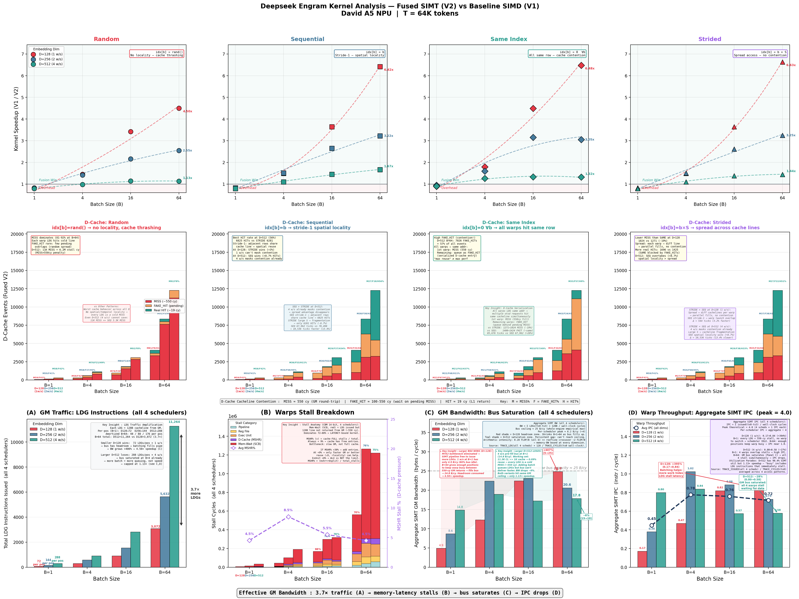

DeepSeek Engram Performance Exploration on A5 NPU : Fused GM-SIMT Kernel¶
1. Overview¶
The DeepSeek Engram layer is an \(O(1)\) memory lookup for N-gram context: hash a token's hidden state into \(H = 8\) head indices, gather \(H\) rows from a shared embedding table, column-wise mean, then sigmoid-gated residual add — Lookup → Aggregate → Gating. This is a GM-bandwidth-bound micro-kernel: each position moves \((H + 2) \times D \times 4\) bytes but executes very few FLOPs, placing it far below the roofline crossover. The SIMD baseline serializes \(H\) DMA transfers through MTE2 with per-head pipeline barriers and routes every value through UB — making MTE2 busy cycles the dominant cost. This work fuses all three stages into a single SIMT kernel using a Register-Forwarding Direct-GM dataflow: data flows from GM through the D-cache directly into per-thread registers, bypassing MTE2 and UB entirely (UB is used only for cross-warp dot-product scratch).
Quick Reference¶
Performance Tuning¶
| Knob | Effect | Recommendation |
|---|---|---|
| Batch size \(B\) | Amortizes SIMT launch overhead; enables D-cache reuse | \(B \geq 4\) for speedup > 1.0×; \(B \geq 16\) for significant gains |
| Embedding dim \(D\) | Controls working set vs D-cache capacity | \(D \leq 256\) gives best SIMT speedup (working set fits in D-cache) |
LAUNCH_BOUND |
Trades GPR count for warp parallelism | LB(1024) for D≤256; LB(512) for D≥512 B≥16 (64 GPRs, independent head loads) |
| Access pattern | Affects D-cache HIT rate | SEQ gives best locality; RAND worst. Difference is modest |
When to Use SIMT Fusion vs Baseline SIMD¶
| Scenario | Recommendation | Reason |
|---|---|---|
| \(B = 1\) | SIMD baseline | SIMT launch overhead exceeds DMA cost |
| \(B \geq 4\), \(D \leq 256\) | SIMT fused | 1.4–4.5× speedup from MTE2 elimination + D-cache reuse |
| \(B \geq 4\), \(D = 512\) | SIMT fused (marginal) | 1.0–1.1× speedup; GM bandwidth bottleneck for both (but SIMT frees UB and indicates hybrid DMA-SIMT or SIMD-SIMT decoupled configurations can achieve more performance benefits) |
SIMT Mapping Selection (compile-time selection via FusedEngramImpl<D, B>)¶
| Path | Config Range | LAUNCH_BOUND |
GPRs | kColWarps | Key Property |
|---|---|---|---|---|---|
| B=1 | All D, B=1 | 1024 | 32 | D/32 | Full-column, each warp owns 32 cols |
| D≤256, B>1 | D∈{128,256}, B>1 | 1024 | 32 | D/(32×kCC) | ColChunks batched; kColWarps=1 at B=64 (zero barriers) |
| D≥512, B≥16 | D∈{512,1024}, B≥16 | 512 | 64 | D/256 | Independent per-head loads, 8 concurrent table reads |
ColChunks Configuration (compile-time selection)¶
| \(D\) | \(B\) | kColWarpsBase | kColChunks | kColWarps | kTotalWarps | Barriers |
|---|---|---|---|---|---|---|
| 128 | 1 | 4 | — | 4 | 4 | 1 |
| 128 | 4 | 4 | 1 | 4 | 16 | 1 |
| 128 | 16 | 4 | 2 | 2 | 32 | 1 |
| 128 | 64 | 4 | 4 | 1 | 64 | 0 |
| 256 | 4 | 8 | 1 | 8 | 32 | 1 |
| 256 | 16 | 8 | 4 | 2 | 32 | 1 |
| 256 | 64 | 8 | 8 | 1 | 64 | 0 |
| 512 | 16 | 16 | 8 | 2 | 32 | 1 |
| 512 | 64 | 16 | 8 | 2 | 128 | 1 per stride-loop iteration |
SIMT Architectural Exploration Demo¶
Beyond kernel fusion, this demo serves as a SIMT architectural exploration of the A5 memory hierarchy under a real inference workload. Through CA-Model cycle-accurate simulation across 48 configurations (\(3D \times 4B \times 4\) patterns), we systematically characterize the following microarchitectural phenomena:
| SIMT Perf Exploration | KeyInsight |
|---|---|
| Access pattern locality | How access patterns (RAND vs SEQ vs SAME vs STRIDE) determine D-cache HIT/MISS/FAKE_HIT ratios and their impact on kernel throughput |
| Cacheline thrashing | D=512 working set (\(12{,}288\) CL) exceeds D-cache capacity (\(1{,}024\) lines) → near-zero HITs → speedup collapses from 4.5× to 1.1× --> exhibits D-cache Thrashing |
| Cacheline reuse | Cross-position temporal reuse: positions sharing table rows (SAME) or accessing nearby rows (SEQ) benefit from warm cachelines left by earlier warps --> exhibits D-cache reuse |
| D-cache pressure | Per-position cacheline demand scales as \((H + 2) \times D/32\) CL — at D=512, a single position touches 160 CL (15.6% of D-cache) |
| D-cache contention | Multiple warps issuing concurrent LDGs to different table rows compete for the same 1,024-line D-cache, causing eviction storms under RAND patterns |
| D-cache serialization | FAKE_HIT events: when multiple warps access the same cacheline while a MISS is in-flight, they serialize behind the pending fill (~100–550 cy) |
| Memory latency | Cold MISS costs ~550 cycles (GM round-trip). This dominates as 72–88% scoreboard stalls across all configs — the kernel is memory-latency-bound |
| Warp effective BW vs warps/scheduler | D=128 B=1: 1 warp/scheduler → BW = 4.89 B/cy (stall-dominated). D=128 B=64: 8 warps/scheduler → BW = 24.82 B/cy (bus-saturated). More warps hide latency until the GM bus ceiling is hit |
| GM effective IPC | Aggregate IPC across 4 schedulers: measures how effectively warps overlap memory stalls. D=128 IPC rises +395% with batch (latency hiding wins). D=512 IPC falls −28% (bus already saturated — more warps can't help) |
| SIMD vs SIMT access pattern sensitivity | SIMD: pattern-independent (DMA cost is fixed per row). SIMT: pattern-dependent (D-cache HIT rate varies 0.09%–55.5% across patterns at D=512, B=64) |
Objectives¶
- Eliminate the MTE2 DMA bottleneck by replacing UB-staged tile operations with D-cache-backed register-resident execution
- Scale kernel performance with batch size \(B\) via multi-position warp mapping and D-cache temporal reuse across positions
- Characterize D-cache locality, thrashing, reuse, contention, and serialization across 4 access patterns and analyze CA-Model cycle-accurate simulator traces
- Quantify the warp effective bandwidth vs warps-per-scheduler interaction and identify the GM bus ceiling (~25 B/cy)
- Measure GM effective IPC to expose the memory-latency wall: the Utilization Paradox where 98% SIMT utilization yields only 1.1× speedup at D=512
- Demonstrate that SIMD baseline is access-pattern-blind while SIMT performance is pattern-sensitive — making access patterns a optimization variable
2. Mathematical Formulation¶
Inputs¶
| Symbol | Shape | Description |
|---|---|---|
| \(T\) | \((R, D)\) | Embedding table — \(R\) rows, \(D\)-dimensional float vectors |
| \(\text{idx}\) | \((B \times H,)\) | Index vector — \(H = 8\) head indices per position, \(B\) positions |
| \(h\) | \((B, D)\) | Hidden states — current token embeddings |
| \(g\) | \((B, D)\) | Gate weights — learned gating vectors |
| \(b\) | scalar | Gate bias — constant \(0.125\) |
Stage 1 — Multi-Head Gather (per position \(p\))¶
Stage 2 — Column-wise Aggregation¶
Stage 3 — Context Gating (Sigmoid Linear Unit)¶
Combined Single-Pass Expression¶
Engram Dataflow¶

3. Test Platform¶
David A5 (Ascend910) SIMT Resources¶
| Resource | Specification |
|---|---|
| Unified Buffer (UB) per Core | 256 KB on-chip SRAM |
| D-Cache per Core | 128 KB (1024 lines × 128 B) |
| Warp Schedulers per Core | 4 (round-robin) |
Max Warps at LAUNCH_BOUND(1024) |
32 |
Max Warps at LAUNCH_BOUND(512) |
16 |
| GPRs per Thread at LB(1024) | 32 |
| GPRs per Thread at LB(512) | 64 |
| Warp Width | 32 threads (lanes) |
| MSHR Entries | ~64 per D-cache |
| Cold MISS Latency | ~550 cycles (GM round-trip via HBM) |
| D-cache HIT Latency | ~19 cycles |
| Cacheline Size | 128 bytes (= 32 floats) |
Thread-to-Column Mapping¶
Each SIMT thread owns exactly one column \(j\) of the embedding dimension for the entire kernel lifetime:
tx = lane_id ∈ [0, 31] — column within warp
ty = warp_id ∈ [0, kWarps - 1]
col = ty × 32 + tx — global column index ∈ [0, D)
| \(D\) | kWarps (B=1) | Total Threads (B=1) | Warps / Scheduler |
|---|---|---|---|
| 128 | 4 | 128 | 1 |
| 256 | 8 | 256 | 2 |
| 512 | 16 | 512 | 4 |
4. Performance Analysis Configuration¶
Test Matrix¶
| Parameter | Values |
|---|---|
| Embedding dimension (\(D\)) | 128, 256, 512 |
| Batch size (\(B\)) | 1, 4, 16, 64 |
| Table size (\(R\)) | 65,536 rows (64K) |
| Access patterns | RAND, SEQ, SAME, STRIDE |
| Simulator | A5 CA-Model |
Access Pattern Definitions¶
| Pattern | Index Assignment | D-Cache Behavior |
|---|---|---|
| RAND | idx[h] = rand() % R |
No locality — cold MISS dominated |
| SEQ | idx[h] = h |
Stride-1 — spatial locality, best HIT rate |
| SAME | idx[h] = const ∀ h |
All heads same row — maximum FAKE_HIT |
| STRIDE | idx[h] = h × (R/H) |
Spread access — distributed cache pressure |
Tensor Sizing¶
| Config | Table \(R \times D\) | Per-Position GM Load |
|---|---|---|
| D=128 | 65536 × 128 | \((8 + 2) \times 128 \times 4 = 5{,}120\) B |
| D=256 | 65536 × 256 | \((8 + 2) \times 256 \times 4 = 10{,}240\) B |
| D=512 | 65536 × 512 | \((8 + 2) \times 512 \times 4 = 20{,}480\) B |
Trace Log Files¶
| # | File | Content |
|---|---|---|
| 1 | core0_summary_log |
Kernel wall-clock busy_ticks (baseline and fused) |
| 2 | ts{0-3}_log.dump |
Per-scheduler instruction issues + CheckBitMask stall vectors |
| 3 | dc.dump |
D-cache tag results: MISS / FAKE_HIT / HIT per access |
| 4 | ub.dump |
Unified Buffer grant statistics per operation class |
5. Baseline SIMD Implementation¶
The baseline uses PTO SIMD tile operators with the MTE2 DMA engine for data movement, processing positions one at a time:
for pos = 0 to B-1:
TLOAD(hiddenF, hidGM) ‖ MTE2 DMA: GM → UB
TLOAD(gateWF, gwGM) ‖ MTE2 DMA: GM → UB
TLOAD(idxTile, idxGM) ‖ MTE2 DMA: GM → UB
pipe_barrier(PIPE_MTE2)
for h = 0 to 7:
TLOAD(headTile[h], embGM[idx[h]]) ‖ 8 serial DMA transfers
pipe_barrier(PIPE_MTE2)
TCOLSUM(aggF, lookupF2D) ‖ Column reduction in UB
TMULS(aggF, aggF, 1/8) ‖ Scale to mean
TMUL(tmpF, hiddenF, gateWF) ‖ h × g element-wise
TROWSUM(gsF, tmpF, tmpF) ‖ Dot product → scalar
TADDS(gsF, gsF, 0.125) ‖ + bias
TMULS(gsF, gsF, -1) ‖ Negate
TEXP(gsF, gsF) ‖ exp(-x)
TADDS(gsF, gsF, 1) ‖ 1 + exp(-x)
TDIVS(gsF, 1, gsF) ‖ 1 / (1 + exp(-x)) = σ
TROWEXPANDMUL(tmpF, aggF, gs) ‖ Gate × agg
TADD(tmpF, hiddenF, tmpF) ‖ + residual
TSTORE(outGM, tmpF) ‖ MTE3 DMA: UB → GM
6. Fused SIMT Implementation¶
6.1 Kernel Architecture¶
The fused kernel has three SIMT variants, selected at compile time by FusedEngramImpl<D, B>:
FusedEngramImpl<D, B>
│
├─ if D ≥ 512 && B ≥ 16 ── simt_engram_v2_lb512<D, B> LB(512) 64 GPRs
│
├─ if B == 1 ── simt_engram_v2<D, 1> LB(1024) 32 GPRs
│
└─ else (D < 512, B > 1) ── simt_engram_v2<D, B> LB(1024) 32 GPRs
| Path | Config Range | LAUNCH_BOUND |
GPRs | kColWarps | Key Property |
|---|---|---|---|---|---|
| B=1 | All D, B=1 | 1024 | 32 | D/32 | Full-column, each warp owns 32 cols |
| D≤256, B>1 | D∈{128,256}, B>1 | 1024 | 32 | D/(32×kCC) | ColChunks batched; kColWarps=1 at B=64 (zero barriers) |
| D≥512, B≥16 | D∈{512,1024}, B≥16 | 512 | 64 | D/256 | Independent per-head loads, 8 concurrent table reads |
6.2 Multi-Position Warp Mapping (B > 1)¶
The core structural optimization of this kernel is multi-position concurrent processing. Instead of processing positions serially like the baseline, all \(B\) positions are mapped to warps simultaneously:
kColWarpsBase = D / 32 (e.g., D=256 → 8)
kColChunks = ColChunksImpl<kColWarpsBase, B>::value
Compile-time: smallest CC such that
(kColWarpsBase / CC) divides evenly AND
(kColWarpsBase / CC) × B ≤ 32
kColWarps = kColWarpsBase / kColChunks (column partitions per position)
kTotalWarps = kColWarps × B (total logical warps)
kLaunchWarps = min(kTotalWarps, 32) (physical warps launched)
At large batch (B=64 for D≤256), ColChunksImpl reaches kColChunks = kColWarpsBase → kColWarps = 1 → each warp owns the full column range for its position → zero cross-warp barriers. At smaller batches (B=4, B=16), kColWarps > 1 and cross-warp dot-product reduction via UB scratch + __sync_workitems() is required.
Position-to-warp assignment:
for (warpId = ty; warpId < kTotalWarps; warpId += kLaunchWarps):
posId = warpId / kColWarps ← which position this warp processes
colWarp = warpId % kColWarps ← which column partition (0 when kColWarps=1)
When kTotalWarps > 32 (e.g., D=128, B=64: \(1 \times 64 = 64\) logical warps), the stride loop lets 32 physical warps process 64 positions in 2 iterations.
6.3 ColChunks Compile-Time Configuration Setting¶
The ColChunksImpl<CWB, B> metafunction finds the optimal column-chunking factor at compile time:
| \(D\) | \(B\) | kColWarpsBase | kColChunks | kColWarps | kTotalWarps | Barriers |
|---|---|---|---|---|---|---|
| 128 | 1 | 4 | — | 4 | 4 | 1 |
| 128 | 4 | 4 | 1 | 4 | 16 | 1 |
| 128 | 16 | 4 | 2 | 2 | 32 | 1 |
| 128 | 64 | 4 | 4 | 1 | 64 | 0 |
| 256 | 4 | 8 | 1 | 8 | 32 | 1 |
| 256 | 16 | 8 | 4 | 2 | 32 | 1 |
| 256 | 64 | 8 | 8 | 1 | 64 | 0 |
| 512 | 16 | 16 | 8 | 2 | 32 | 1 |
| 512 | 64 | 16 | 8 | 2 | 128 | 1 per stride-loop iteration |
For D≤256 with B=64: kColChunks equals kColWarpsBase, collapsing all column warps into a single warp per position. Each thread processes kColChunks columns via an unrolled inner loop, accumulating dot_partial across all chunks. The redux_add then reduces the full D-wide dot product within a single warp — no UB scratch or barrier needed. At smaller batches (B=4, B=16), ColChunksImpl selects a smaller kColChunks to keep kTotalWarps ≤ 32, leaving kColWarps > 1 and requiring cross-warp reduction.
6.4 B=1 Kernel Structure¶
__simt_vf__ LAUNCH_BOUND(1024)
void simt_engram_v2<D, 1>(...)
{
const uint32_t col = ty * 32 + tx;
if (ty >= D/32) return;
// Phase A: Load hidden, gate_weight (coalesced LDG → D-cache → GPR)
float h_val = gmHidden[col];
float g_val = gmGateW[col];
// Phase B: Load indices (warp-uniform, single cacheline)
int32_t idx[8];
for (h = 0..7) idx[h] = gmIndices[h];
// Phase C: Warp-partitioned dot product
float warp_dot = redux_add(h_val * g_val); // hardware 32-lane sum
scrBuf[ty] = warp_dot; // partial sum → UB
__sync_workitems(); // ONLY cross-warp barrier
// Phase D: Reconstruct full dot, apply gating
float dot = 0.125;
for (w = 0..kWarps-1) dot += scrBuf[w];
float gate = 1 / (1 + expf(-dot));
// Phase E: Streamed embedding accumulation
float agg = gmTable[idx[0] * D + col];
for (h = 1..7) agg += gmTable[idx[h] * D + col];
gmOutput[col] = h_val + (gate / 8) * agg;
}
6.5 B>1 Kernel Structure (kColWarps=1 path, e.g., D≤256 B=64)¶
__simt_vf__ LAUNCH_BOUND(1024)
void simt_engram_v2<D, B>(...) // D ≤ 256, B > 1
{
for (warpId = ty; warpId < kColWarps * B; warpId += kLaunchWarps) {
posId = warpId; // kColWarps=1, so warpId == posId
// Phase A: Multi-chunk dot product (zero barriers)
float dot_partial = 0;
float h_reg[kColChunks]; // cached for Phase C
for (c = 0..kColChunks-1) {
col = c * 32 + tx;
h_reg[c] = gmHidden[posId * D + col];
dot_partial += h_reg[c] * gmGateW[posId * D + col];
}
// Single-warp redux — NO barrier (kColWarps=1)
float dot = redux_add(dot_partial) + 0.125;
float gate = 1 / (1 + expf(-dot));
// Phase B: Embedding lookup + fused output
int32_t idx[8];
for (h = 0..7) idx[h] = gmIndices[posId * 8 + h];
for (c = 0..kColChunks-1) {
col = c * 32 + tx;
float agg = gmTable[idx[0] * D + col];
for (h = 1..7) agg += gmTable[idx[h] * D + col];
gmOutput[posId * D + col] = h_reg[c] + (gate / 8) * agg;
}
} // stride loop for kTotalWarps > 32
}
6.6 LB(512) Variant (D≥512, B≥16)¶
At D≥512 with B≥16, this variant uses LAUNCH_BOUND(512) for 64 GPRs per thread. Key architectural differences:
-
Independent per-head loads: Instead of serial
agg += gmTable[...](which creates a dependency chain blocking the next load), all 8 table rows are loaded into independent temporariest0..t7then tree-summed as(t0+t1) + (t2+t3) + (t4+t5) + (t6+t7). This breaks the serial dependency chain and exposes 8 concurrent outstanding LDGs per column. -
kColWarps=D/256 (2 at D=512, 4 at D=1024): Preserves active warps for latency hiding while keeping the D-cache working set manageable.
-
Indices loaded early:
idx[H]is loaded before the dot-product phase to pipeline GM latency with subsequent computation.
7. Core SIMT Optimizations¶
7.1 Register-Forwarding Direct-GM Dataflow¶
All input data (table, hidden, gate_weight, indices) and output data bypass the UB entirely. Values flow from GM through the D-cache directly into per-thread GPRs:
┌──────┐ ┌──────────┐
│ GM │──── D-cache ────>│ Register │──> h_val × g_val (partial dot)
│ │ (LDG) │ File │──> Σ table rows (agg)
└──────┘ │ (GPRs) │──> fused output = h + σ(dot) × agg/8
└─────┬────┘
↓ warp_dot only (B=1 or kColWarps>1)
┌────────────┐
│ UB scratch │ ← kColWarps partial sums
└────────────┘
__sync_workitems()
UB is still used for cross-warp dot-product reduction when kColWarps > 1 (B=1 path: always; D≥512 B≥16 LB512: kColWarps=D/256). Each warp writes its warp_dot partial sum to scrBuf[ty], issues __sync_workitems(), then reads back kColWarps entries. For D≤256 B>1 (kColWarps = 1), redux_add completes the entire dot product within a single warp — zero UB usage, zero barriers.
The remaining SIMT UB traffic visible in ub.dump (SIMT_R, BHU_W, BHU_R) is automatic D-cache hardware plumbing — invisible to the application I/O and non-blocking.
UB Application-initiated I/O Operations (from ub.dump [UB_GRANT_STATS], B=1):
| \(D\) | SIMD Baseline Total | SIMT Writer (STG only) | Reduction |
|---|---|---|---|
| 128 | 129 | 8 | 94% |
| 256 | 239 | 16 | 93% |
| 512 | 459 | 32 | 93% |
MTE2 busy cycles (B=64, RAND): - Baseline: 106,261 cycles - Fused: 5 cycles (hardware setup only) - Reduction: ~0%
7.2 Multi-Position Warp Mapping & Position Stride Loop¶
For \(B > 1\), warp ID maps directly to position ID via posId = warpId / kColWarps. When kTotalWarps > kLaunchWarps (e.g., D=128, B=64 → 64 logical warps, 32 physical), the stride loop for (warpId = ty; ...; warpId += kLaunchWarps) distributes work across iterations:
This amortizes the SIMT launch overhead (~1,100 cycles) across all \(B\) positions. At B=1 the overhead is 1,100 cy/position; at B=64 it amortizes to ~17 cy/position.
7.3 Zero-Barrier Design for D≤256 (ColChunks Remapping)¶
When ColChunks = kColWarpsBase (true for D≤256 at B=64), each warp covers the entire embedding dimension. The dot product redux_add(dot_partial) completes within a single warp — no __sync_workitems() barrier needed:
| Approach | Barriers | Overhead |
|---|---|---|
| B=1 cross-warp dot (kWarps = D/32) | 1 | ~200 cy latency + sync jitter |
| D≤256 B=64 ColChunks (kColWarps=1) | 0 | Zero barrier — parallel |
| D≥512 B≥16 LB512 (kColWarps=2) | 1 per stride iteration | Required for cross-warp dot sum |
7.4 Warp-Partitioned Cross-Warp Dot Product¶
When kColWarps > 1 (B=1 path or D≥512), the \(D\)-wide dot product spans multiple warps. Each warp computes only its 32-element partition:
Partial sums are shared via UB scratch + one __sync_workitems():
Without partitioning, every warp would redundantly load ALL \(D\) values of \(h\) and \(g\), generating massive D-cache FAKE_HITs:
| \(D\) | kWarps | Naive Total Loads (h+g) | Partitioned Loads | Savings |
|---|---|---|---|---|
| 128 | 4 | 32 | 8 | 75% |
| 256 | 8 | 128 | 16 | 87.5% |
| 512 | 16 | 512 | 32 | 93.75% |
Naive: each warp loads all \(D/32\) cachelines for both \(h\) and \(g\) = \(\text{kWarps} \times 2 \times D/32\). Partitioned: each warp loads only its 32-element slice = \(\text{kWarps} \times 2\).
7.5 SIMT In-Register Caching¶
In the B>1 path, h_reg[kColChunks] is loaded during the dot-product phase and kept live in registers for the output phase. This eliminates a second set of D-cache reads for hidden:
// Phase A: load + dot
float h_reg[kColChunks];
for (c = 0..kColChunks-1) {
h_reg[c] = gmHidden[posId * D + col]; // First load → D-cache MISS
dot_partial += h_reg[c] * gmGateW[...];
}
// Phase C: reuse from register (zero D-cache cost)
gmOutput[...] = h_reg[c] + (gate * kInvH) * agg;
At D=256: saves 8 LDG instructions per position (\(8 \times 128\text{B} = 1{,}024\text{B}\) per position).
7.6 Streamed Embedding Accumulation¶
Instead of materializing all \(H = 8\) gathered rows in a register array (consuming 8 GPRs per column), the kernel streams them into a single accumulator:
At LAUNCH_BOUND(1024) with 32 GPRs, the kernel uses ~25 base GPRs. An emb[8] array pushes to 33 and triggers register spills, increasing SIMT_busy by 30%+ at D=256.
The LB(512) variant uses the opposite strategy — 8 independent loads t0..t7 — because 64 GPRs provide ample headroom and the independent loads break the serial dependency chain for better instruction-level parallelism.
7.7 Independent Head-Load Pattern (512 Shape)¶
In the LB(512) variant, all 8 table row loads per column are issued independently:
float t0 = gmTable[idx[0] * D + col];
float t1 = gmTable[idx[1] * D + col]; // no dependency on t0
...
float t7 = gmTable[idx[7] * D + col]; // no dependency on t0..t6
float agg = (t0 + t1) + (t2 + t3) + (t4 + t5) + (t6 + t7);
With the serial agg += ... approach, each load depends on the previous addition completing — limiting outstanding to 1 per column. With independent loads, the D-cache can have \(\leq 8\) concurrent requests per column per warp, significantly improving memory-level parallelism.
7.8 Bias Merging¶
The gate bias \(b = 0.125\) is used as the dot-product accumulator's initial value:
dot = kGateBiasF; // 0.125 as initial value
for (w = 0..kColWarps-1) dot += scrBuf[w]; // kColWarps FADDs total
// vs naive: dot = 0; for (...) dot += ...; dot += kGateBiasF; // kColWarps+1
Saves 1 FADD per thread.
8. Engram Kernel Performance Analysis — Fused SIMT vs SIMD (CA Model)¶

The figure presents 12 subplots organized as: - Row 1 (4 subplots): Kernel speedup per access pattern - Row 2 (4 subplots): D-cache event breakdown per access pattern - Row 3 (4 subplots): Root cause analysis — GM Traffic (A), Stall Breakdown (B), GM Bandwidth (C), Warp Throughput IPC (D)
All numerical values are extracted from CA-Model cycle-accurate simulator trace logs.
Variable Extraction Reference¶
| Variable | Source File | Extraction |
|---|---|---|
| TICKS | core0_summary_log |
busy_ticks field (one per kernel run) |
| TRACE_ISSUED | ts{0-3}_log.dump |
grep -c ') issue' per scheduler, sum all 4 |
| TRACE_LDG | ts{0-3}_log.dump |
grep -c 'SIMT_LDG.*issue' per scheduler, sum all 4 |
| TRACE_CYCLES | ts0_log.dump |
Last − first CheckBitMask timestamp (shared clock across all 4 schedulers) |
| DC events | dc.dump |
grep -c "tagRst:MISS\|FAKE_HIT\|HIT" |
| CBM_STALLS | ts{0-3}_log.dump |
Parse 14-bit CheckBitMask per cycle, count each bit category, sum all 4 schedulers |
8.1 Kernel Speedup¶
RAND Pattern Speedup¶
| \(D\) | B=1 | B=4 | B=16 | B=64 |
|---|---|---|---|---|
| 128 | 0.80× | 1.45× | 3.42× | 4.50× |
| 256 | 0.83× | 1.42× | 2.16× | 2.55× |
| 512 | 0.79× | 0.98× | 1.14× | 1.13× |
B=1 is always slower (0.79–0.83×): SIMT launch overhead (~1,100 cycles for warp configuration + barrier + D-cache cold startup) exceeds the baseline's serial DMA cost at single-position scale. Crossover at B ≈ 3–4 for D=128.
D=128 achieves 4.50× at B=64: Per-position cost drops from 4,576 cy/pos (B=1) to 380 cy/pos (B=64) — 12.0× amortization. The D-cache working set at D=128 fits well: 4,096 cacheline requests across 64 positions yield 10.5% HIT rate from cross-position reuse.
D=512 plateaus at 1.13×: Working set of 12,288 cacheline requests far exceeds the 1,024-line D-cache capacity. Near-zero HIT rate (0.09%) means both baseline and fused variants are equally GM-bandwidth-bound.
8.2 D-Cache Event Breakdown¶
Stacked bars per pattern showing MISS, FAKE_HIT, and HIT counts for the fused kernel.
| Event | Meaning | Latency |
|---|---|---|
| MISS | Cacheline not present → triggers GM fetch | ~550 cycles |
| FAKE_HIT | Pending MISS in-flight → piggybacks, no new GM request | ~100–550 cycles |
| HIT | Cacheline resident — valid data | ~19 cycles |
D-Cache Events at B=64 (from dc.dump)¶
| Pattern | \(D\) | MISS | FAKE_HIT | HIT | Total | MISS % |
|---|---|---|---|---|---|---|
| RAND | 128 | 3,320 | 347 | 429 | 4,096 | 81% |
| RAND | 256 | 7,632 | 384 | 336 | 8,352 | 91% |
| RAND | 512 | 11,248 | 1,029 | 11 | 12,288 | 92% |
| SEQ | 512 | 3,259 | 2,204 | 6,825 | 12,288 | 27% |
| SAME | 512 | 4,113 | 7,026 | 1,149 | 12,288 | 33% |
| STRIDE | 512 | 3,330 | 2,677 | 6,281 | 12,288 | 27% |
RAND: MISS dominates at 81–92%. Random indices produce no spatial or temporal locality.
SEQ: Best HIT rate — 55.5% at D=512, B=64. Sequential indices access consecutive rows; warp scheduling depth creates temporal overlap where earlier loads complete before later warps access nearby cachelines.
SAME: Highest FAKE_HIT — 57.2% at D=512, B=64. All 8 heads access the identical row, so the first warp's MISS triggers 7 subsequent FAKE_HITs while the cacheline fill is still in-flight.
Cross-pattern performance impact: SEQ fused ticks = 67,962 vs STRIDE = 78,498 at D=512, B=64 — a 13.4% advantage from better D-cache locality.
8.3 GM Traffic (LDG Instructions)¶
Total SIMT_LDG instructions issued across all 4 schedulers. LDG count is pattern-independent (same program path regardless of index values).
| \(B\) | D=128 | D=256 | D=512 |
|---|---|---|---|
| 1 | 72 | 144 | 288 |
| 4 | 288 | 576 | 896 |
| 16 | 896 | 1,536 | 2,816 |
| 64 | 3,072 | 5,632 | 11,264 |
Per-warp LDG count: 18 LDGs/warp at B=1 — each warp loads 10 values via LDG (1 hidden + 1 gate_weight + 8 table row elements), plus 8 additional LDGs for index loads (gmIndices[h] for h=0..7, warp-uniform but each generates a separate LDG instruction). UB scratch reads (scrBuf[w]) are NOT LDGs — they are direct UB reads. Total: \(18 \times \text{kWarps}\) (72 = 18×4, 144 = 18×8, 288 = 18×16).
D=512 issues 3.7× more LDGs than D=128 at every batch: \(11{,}264 / 3{,}072 = 3.67\times\). This traffic ratio is the root cause of D=512's performance gap.
Per-position amortization at B=64: D=128: \(3{,}072/64 = 48\) LDGs/pos (vs 72 at B=1 → 33% saved); D=512: \(11{,}264/64 = 176\) (vs 288 → 39% saved). The savings come from hidden/gate_weight D-cache reuse across positions.
Stall Breakdown (CheckBitMask)¶
The 14-bit CheckBitMask field in each scheduler's trace indicates stall conditions per cycle. Each bit is counted across all cycles of all 4 schedulers:
| Bit | Stall | Description |
|---|---|---|
| 13 | RdSplit | Read-split buffer full |
| 12 | MSHR | D-cache MSHR entry exhausted — cannot accept new MISS |
| 9 | ExUnit | Execution unit resource conflict |
| 8–5 | RegFile | Register file read port conflict |
| 3 | Scoreboard | Data dependency — LDG issued but data not returned (~550 cy wait) |
| 2–0 | Pipeline | Instruction pipeline / setup stall |
Values below are averaged across 4 access patterns.
Scoreboard dominance: Scoreboard (memory-wait) constitutes 72–88% of all stall cycles across every configuration. This proves the fused kernel is fundamentally memory-latency-bound.
MSHR stalls are only 1–5% at B=64, confirming the D-cache has free MSHR slots. The bottleneck is not cache capacity but GM round-trip latency.
8.5 GM Bandwidth¶
Aggregate SIMT GM bandwidth measures how fast the engine delivers data through the D-cache return path:
| Config | LDGs | Bytes | Mean Cycles | BW (B/cy) |
|---|---|---|---|---|
| D=128, B=1 | 72 | 9,216 | 1,884 | 4.89 |
| D=128, B=4 | 288 | 36,864 | 3,005 | 12.27 |
| D=128, B=16 | 896 | 114,688 | 5,119 | 22.40 |
| D=128, B=64 | 3,072 | 393,216 | 15,844 | 24.82 |
| D=256, B=1 | 144 | 18,432 | 2,131 | 8.65 |
| D=256, B=4 | 576 | 73,728 | 3,299 | 22.35 |
| D=256, B=16 | 1,536 | 196,608 | 8,529 | 23.05 |
| D=256, B=64 | 5,632 | 720,896 | 35,022 | 20.58 |
| D=512, B=1 | 288 | 36,864 | 2,487 | 14.82 |
| D=512, B=4 | 896 | 114,688 | 6,063 | 18.92 |
| D=512, B=16 | 2,816 | 360,448 | 20,971 | 17.19 |
| D=512, B=64 | 11,264 | 1,441,792 | 80,967 | 17.81 |
The empirical peak is 24.82 B/cy at D=128, B=64 — rounded to 25. This is NOT a hardware spec; it is the maximum throughput the GM return path (HBM → NoC → D-cache fill port) sustains in the simulator model. Per-warp sustained BW is only \(128 / 550 = 0.23\) B/cy; the aggregate 25 B/cy is achieved because multiple warps issue concurrent LDGs whose 550-cycle stalls overlap:
D=128: BW rises from 4.89 to 24.82 (+407%) as batch grows. At B=1 with 1 warp/scheduler, insufficient memory-level parallelism. At B=64, enough LDGs in-flight to saturate the bus.
D=512: BW peaks at B=4 (18.92) and barely changes (17–18). The 11,264 × 128B = 1.4 MB working set far exceeds D-cache capacity. Constant thrashing holds BW below the ceiling.
8.6 Warp Throughput (IPC)¶
Instructions Per Cycle aggregated across all 4 schedulers:
| Config | TRACE_ISSUED | Mean Cycles | Agg IPC | Per-Sched IPC |
|---|---|---|---|---|
| D=128, B=1 | 316 | 1,884 | 0.170 | 0.043 |
| D=128, B=4 | 1,376 | 3,005 | 0.469 | 0.117 |
| D=128, B=16 | 4,096 | 5,119 | 0.820 | 0.205 |
| D=128, B=64 | 12,864 | 15,844 | 0.843 | 0.211 |
| D=256, B=1 | 792 | 2,131 | 0.378 | 0.094 |
| D=256, B=4 | 3,360 | 3,299 | 1.024 | 0.256 |
| D=256, B=16 | 7,328 | 8,529 | 0.882 | 0.221 |
| D=256, B=64 | 25,216 | 35,022 | 0.728 | 0.182 |
| D=512, B=1 | 1,968 | 2,487 | 0.800 | 0.200 |
| D=512, B=4 | 4,992 | 6,063 | 0.837 | 0.209 |
| D=512, B=16 | 11,904 | 20,971 | 0.573 | 0.143 |
| D=512, B=64 | 45,888 | 80,967 | 0.579 | 0.145 |
Peak theoretical IPC = 4.0: 4 schedulers × 1.0 max each.
D=128 IPC rises with batch (0.17 → 0.84, +395%): At B=1, 1 warp/scheduler stalls for 550 cycles per LDG with no other warp to switch to. At B=64, the stride loop gives the scheduler 64 positions worth of work — during 550-cycle stalls, it can issue instructions for other positions.
D=512 IPC falls from B=1 to B=64 (0.80 → 0.58, −28%): At B=1, 4 warps/scheduler overlap stalls effectively. At B=64, massive LDG pressure saturates the GM bus (Panel C) — ALL warps stall simultaneously waiting for data, pushing IPC down.
8.7 Key Take-Away¶
- D=512 issues 3.7× more LDGs than D=128 at B=64 (11,264 vs 3,072)
- Those LDGs cause 72–88% scoreboard stalls — warps wait 550 cycles per GM round-trip
- The GM bus saturates at ~25 B/cy — physical return path cannot deliver data faster
- All warps stall together → IPC drops from 0.80 to 0.58 at D=512
8.8 SIMT Architectural Exploration¶
Summary Table¶
| # | Phenomenon | Definition | Key Observation in Engram |
|---|---|---|---|
| 1 | D-Cache Locality | Benefits from accessing nearby (spatial) or recently-used (temporal) addresses. HIT ~19 cy vs MISS ~550 cy. | SEQ at D=512 B=64: 55.5% HIT. RAND: 0.09%. SEQ ticks 26% lower than RAND. |
| 2 | D-Cache Thrashing | Working set exceeds cache capacity → continuous eviction of needed lines. | D=128: 40 CL/pos (3.9% of cache) → 4.50×. D=512: 160 CL/pos (15.6%) → 1.13×. Speedup cliff. |
| 3 | D-Cache Reuse | Cacheline loaded by one consumer remains resident for later consumers. Warp scheduling order determines survival. | SAME: 8 heads share a row → first MISS fills, 7 others get FAKE_HIT/HIT. h_reg[] keeps hidden in GPRs for output reuse (§7.5). |
| 4 | D-Cache Pressure | Ratio of unique CL touched to cache size. High pressure → eviction storms. | D=128 B=64: moderate pressure → 24.82 B/cy. D=512 B=64: 160 CL/pos eviction pressure → 17.81 B/cy despite 3.7× more LDGs. |
| 5 | D-Cache Contention | Multiple warps compete for the same cache, each MISS evicting another warp's data. | D=512: IPC falls −28% with batch (destructive eviction). D=128: IPC rises +395% (no contention). |
| 6 | D-Cache Serialization | Multiple requestors access a cacheline while a MISS is in-flight → queue behind the fill (FAKE_HIT, ~100–550 cy). | SAME at D=512 B=64: 57.2% FAKE_HITs (7,026/12,288). Saves GM BW but serialization penalty offsets reuse benefit → SAME ≈ SEQ. |
| 7 | Memory Latency | Time from LDG issue to data return. HIT ~19 cy, cold MISS ~550 cy (cache → NoC → HBM → return). | Scoreboard stalls = 72–88% of all stall cycles across every config. Kernel is memory-latency-bound. |
| 8 | Warp Effective BW | Single warp: 0.23 B/cy. Multiple warps overlap stalls → aggregate BW grows until bus ceiling. | D=128: 4.89 → 24.82 B/cy (+5×) with batch. D=512: peaks at 18.92 and flatlines (thrashing). Bus ceiling ~25 B/cy. |
| 9 | GM Effective IPC | Instructions/cycle across 4 schedulers (peak 4.0). Rising IPC = latency hiding works. Falling IPC = bus saturated. | D=128: +395% IPC B=1→B=64 (latency-limited → add warps helps). D=512: −28% (bandwidth-limited → more warps hurt). |
Observed Pattern¶
8.8.1 D-Cache Locality
| Metric | RAND (D=512 B=64) | SEQ (D=512 B=64) | Delta | |:-------|:--:|:--:|:--:| | HIT rate | 0.09% | 55.5% | +55.4pp | | Kernel ticks | higher | 26% lower | SEQ wins | Sequential indices access consecutive table rows that share cachelines → spatial locality. Random indices scatter across the 64K-row table → no spatial relationship.8.8.2 D-Cache Thrashing
| $D$ | CL/position | % of D-cache (1024 lines) | CL at B=64 | Speedup | |:---:|:-----------:|:-------------------------:|:----------:|:-------:| | 128 | 40 | 3.9% | 2,560 | **4.50×** | | 256 | 80 | 7.8% | 5,120 | **2.55×** | | 512 | 160 | 15.6% | 10,240 | **1.13×** | Per-position CL demand = $(H + 2) \times D/32$. At D=512 B=64, total demand is 10× cache capacity → near-zero HITs → speedup collapses.8.8.3 D-Cache Reuse
| Reuse Type | Mechanism | Benefit | |:-----------|:----------|:--------| | Cross-head (SAME) | All 8 heads index same row → first MISS fills CL, 7 others get FAKE_HIT/HIT | Saves 7 GM requests per position | | Cross-position (SEQ) | Adjacent positions access nearby rows → warm CL from earlier warps | Temporal overlap from warp scheduling depth | | Intra-position (GPR) | `h_reg[kColChunks]` loaded in dot-product phase, reused in output phase (§7.5) | Zero D-cache cost for hidden re-read |8.8.4 D-Cache Pressure
| Config | CL/position | Effective BW | Bottleneck | |:-------|:-----------:|:------------:|:-----------| | D=128 B=64 | 40 | 24.82 B/cy | GM bus ceiling (~25 B/cy) | | D=512 B=64 | 160 | 17.81 B/cy | Cache eviction pressure | D=128: moderate pressure → cache absorbs traffic → BW reaches bus ceiling. D=512: 160 CL/pos sustained eviction prevents cache from retaining data → BW capped below bus ceiling.8.8.5 D-Cache Contention
| Config | Warps/scheduler | IPC trend with batch | Explanation | |:-------|:---------------:|:--------------------:|:------------| | D=128 | 1 → 8 | +395% (rises) | Working set fits → more warps = more latency hiding | | D=512 | 4 → 4 (×8 stride) | −28% (falls) | Working set overflows → stride loop touches 8× more table rows per warp | At D=512 B=64: 128 logical warps mapped to 16 physical (4/scheduler). The stride loop makes each warp process 8 positions, each touching 160 unique CL → massive cache pollution per warp.8.8.6 D-Cache Serialization (FAKE_HIT)
| Pattern | D=512 B=64 Events | MISS | FAKE_HIT | HIT | FAKE_HIT % | |:--------|:------------------:|:----:|:--------:|:---:|:----------:| | SAME | 12,288 | 4,113 | **7,026** | 1,149 | **57.2%** | | RAND | 12,288 | 11,248 | 1,029 | 11 | 8.4% | SAME: all 8 heads → same row → first warp triggers MISS → 7 others queue behind (FAKE_HIT). Saves GM bandwidth but serialization penalty (~100–550 cy wait) offsets the reuse benefit → SAME ≈ SEQ performance.8.8.7 Memory Latency
| Stall Category | Share of Total Stalls | Implication | |:---------------|:---------------------:|:------------| | Scoreboard (LDG wait) | **72–88%** | Warps wait ~550 cy per GM round-trip | | MSHR | 1–5% | Cache slots available — not the bottleneck | | Other (ExUnit, RegFile, Pipeline) | 7–27% | Minor contributors | The kernel is not compute-bound, not cache-capacity-bound, not MSHR-limited — it is **memory-latency-bound**. Even at 98.4% SIMT utilization, ~75% of execution time is spent waiting for data.8.8.8 Warp Effective BW vs Warps-per-Scheduler
| Config | Warps/Sched | BW (B/cy) | vs B=1 | |:-------|:-----------:|:---------:|:------:| | D=128 B=1 | 1 | 4.89 | — | | D=128 B=64 | 8 | 24.82 | **+5.1×** | | D=512 B=1 | 4 | 14.82 | — | | D=512 B=64 | 4 | 17.81 | +1.2× | D=128: BW scales 5× with warps (latency hiding). D=512: BW flatlines (thrashing prevents cache absorption). The ~25 B/cy ceiling is the physical throughput of GM return path (HBM → NoC → D-cache fill port).8.8.9 GM Effective IPC
| Config | Agg IPC | Trend B=1→B=64 | Diagnosis | |:-------|:-------:|:---------------:|:----------| | D=128 | 0.17 → 0.84 | **+395%** | Latency-limited: more warps help | | D=512 | 0.80 → 0.58 | **−28%** | Bandwidth-limited: more warps hurt | Rising IPC = scheduler finds ready warps during 550-cy stalls. Falling IPC = all warps stall simultaneously waiting for data (bus saturated).9. Key Insights¶
-
MTE2 elimination is the primary speedup source: Baseline spends most of kernel ticks in MTE2 DMA. SIMT reduces MTE2 to 5 cycles (hardware setup), converting the bottleneck from DMA-serialization to D-cache-backed register execution.
-
Batch amortizes SIMT overhead: B=1 is 0.8× (slower, launch overhead dominates). B=64 is 4.5× (12× per-position amortization). Crossover at B ≈ 3–4.
-
D-cache working set determines speedup ceiling: D=128 working set (4,096 CL at B=64) yields 10.5% HIT rate → 4.50×. D=512 working set (12,288 CL >> 1,024 capacity) yields 0.09% HITs → 1.13×.
-
Memory-latency (scoreboard) is the main bottleneck: 72–88% of all stall cycles across every configuration. The kernel is memory-latency-bound, not compute-bound or cache-capacity-bound.
-
MSHR is NOT exhausted: Only 1–5% MSHR stalls at B=64. The 64-entry MSHR has free capacity. The bottleneck is GM round-trip latency, not cache slot availability.
-
The GM bus saturates at ~25 B/cy: Empirical ceiling (24.82 B/cy at D=128, B=64). D=512 hits this ceiling at B=4 and cannot improve further.
-
IPC divergence reveals the scaling wall: D=128 IPC rises +395% with batch (more work helps). D=512 IPC falls −28% (more work hurts — bus already saturated).
-
Access pattern has modest impact: RAND vs SAME shows only ~11% difference at D=256, B=4. Warp scheduling hides most pattern effects.
-
The Utilization Paradox: D=512 achieves 98.4% SIMT utilization but only 1.13× speedup. The SIMT engine is "busy" whenever any warp issues an instruction — including
SIMT_LDGthat then stalls 550 cycles. The scheduler always finds a warp to issue (high utilization), but the issued instruction is often a memory access that contributes only latency, not useful compute.
10. Performance Tuning Knob¶
| Knob | Effect | Recommendation |
|---|---|---|
| Batch size \(B\) | Amortizes SIMT launch overhead; enables D-cache reuse | \(B \geq 4\) for speedup > 1.0×; \(B \geq 16\) for significant gains |
| Embedding dim \(D\) | Controls working set vs D-cache capacity | \(D \leq 256\) gives best SIMT speedup (working set fits in D-cache) |
LAUNCH_BOUND |
Trades GPR count for warp parallelism | LB(1024) for D≤256 (max warps, ColChunks zero-barrier); LB(512) for D≥512 B≥16 (64 GPRs for independent head loads) |
| Access pattern | Affects D-cache HIT rate | SEQ gives best locality; RAND worst. Difference is modest |
When to Use SIMT Fusion vs Baseline SIMD¶
| Scenario | Recommendation | Reason |
|---|---|---|
| \(B = 1\) | SIMD baseline | SIMT launch overhead exceeds DMA cost |
| \(B \geq 4\), \(D \leq 256\) | SIMT fused | 1.4–4.5× speedup from MTE2 elimination + D-cache reuse |
| \(B \geq 4\), \(D = 512\) | SIMT fused (marginal) | 1.0–1.1× speedup; GM bandwidth is bottleneck for both (but SIMT has clear benefit of not using UB & SIMT ld/st coupled with coompute - which will demonstrate significant performance gain when SIMT used for hybrid configuration (DMA-SIMT or SIMD-SIMT - decoupled ld/st with compute & UB staging)) |
11. Build and Run¶
Two Build Modes¶
This test suite supports two modes, controlled by the PERF_ANALYSIS compile definition:
| Mode | Compile Flag | Kernel (D,B) Combos | Test Configs | Total Tests |
|---|---|---|---|---|
| Default ST | (none) | 4 release configs | 4 × 2 variants | 8 |
| Performance Exploration | -DPERF_ANALYSIS |
16 (4D × 4B) | 192 × 2 variants | 384 |
Default ST Mode¶
Builds and runs 4 representative release configs with RAND-only indices:
| Test | Dim | Batch | Table | Variants |
|---|---|---|---|---|
ENGRAMSIMTTest.*_E128_B1_T64K |
128 | 1 | 64K | baseline + fused |
ENGRAMSIMTTest.*_E256_B4_T64K |
256 | 4 | 64K | baseline + fused |
ENGRAMSIMTTest.*_E512_B1_T64K |
512 | 1 | 64K | baseline + fused |
ENGRAMSIMTTest.*_E1024_B1_T64K |
1024 | 1 | 64K | baseline + fused |
No special compile flags needed — this is the default build.
Performance Exploration Mode (PERF_ANALYSIS)¶
To run the full architectural exploration (4D × 4B × 4 patterns × 3 table sizes), pass -p to run.sh:
bash run.sh -r sim -v Ascend910_9599 -p
This activates #ifdef PERF_ANALYSIS guards in three files:
- engram-simt_kernel.cpp: Instantiates all 16 ENGRAM_INST(D, B) combos — D ∈ {128, 256, 512, 1024} × B ∈ {1, 4, 16, 64}
- main.cpp: CT_P → CT_D → CT_ALL macro chain generates tests across 4 patterns (RAND, SEQ, SAME, STRIDE) × 3 table sizes (64K, 256K, 1M) × 4 batches × 4 dims
- gen_data.py: Run with PERF_ANALYSIS=1 python3 gen_data.py to generate golden data for all 384 test directories with pattern-specific index generation
Test naming: ENGRAMSIMTTest.{baseline|fused}_E{D}_B{B}_T{size}_{pattern}
Example: ENGRAMSIMTTest.fused_E512_B16_T64K_STRIDE
Prerequisites¶
export ASCEND_HOME_PATH=/usr/local/Ascend/cann
source /usr/local/Ascend/cann/set_env.sh
Run via run.sh¶
cd kernels/manual/a5/engram_simt
# Default mode — all 8 tests (sim)
bash run.sh -r sim -v Ascend910_9599
# Single test
bash run.sh -r sim -v Ascend910_9599 -c "ENGRAMSIMTTest.baseline_E128_B1_T64K"
# Perf-analysis mode — all 384 tests
bash run.sh -r sim -v Ascend910_9599 -p
# Perf-analysis mode — single exploration test
bash run.sh -r sim -v Ascend910_9599 -p -c "ENGRAMSIMTTest.fused_E512_B16_T64K_STRIDE"
12. References¶
- DeepSeek-V3 Technical Paper — "Conditional Memory via Scalable Lookup" (arXiv 2601.07372)